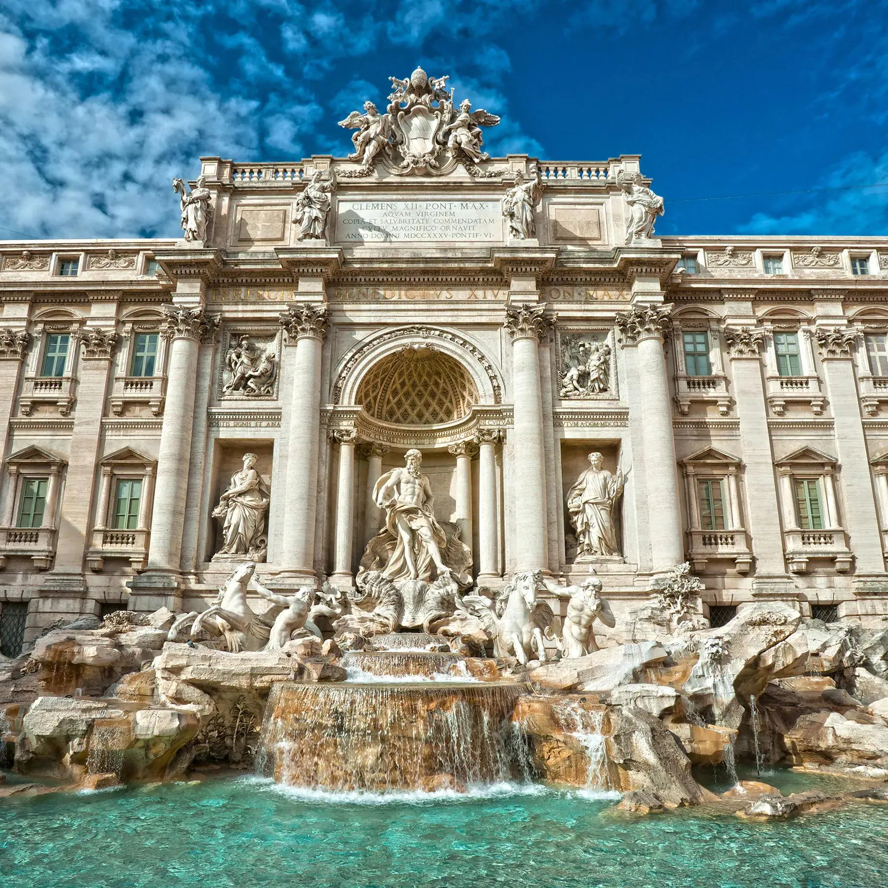

La Fontana di Trevi es la fuente barroca más grande y famosa de Roma . Mide 26 metros de alto y 20 metros de ancho . Adosada al Palacio Poli , representa al dios Neptuno en un carro marino.
Los turistas lanzan monedas sobre su hombro izquierdo para asegurar su regreso a la ciudad .

El Coliseo Romano (o Anfiteatro Flavio) es una de las Siete Maravillas del Mundo Moderno . Construido en el siglo I d.C. , este gigantesco recinto tenía capacidad para 50.000 a 80.000 espectadores,
quienes se reunían para presenciar combates de gladiadores y otros espectáculos públicos masivos .

El Castillo de Sant'Angelo es una impresionante fortaleza a orillas del río Tíber y conectada al Vaticano por el corredor fortificado Passetto.
Originalmente fue el Mausoleo del emperador Adriano en el siglo II. Hoy funciona como un museo donde convergen restos romanos, residencias papales, celdas y magníficas vistas de Roma.